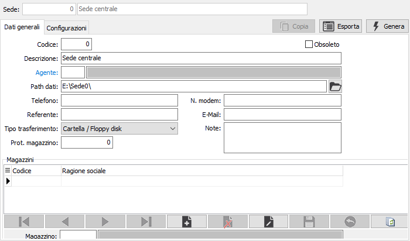
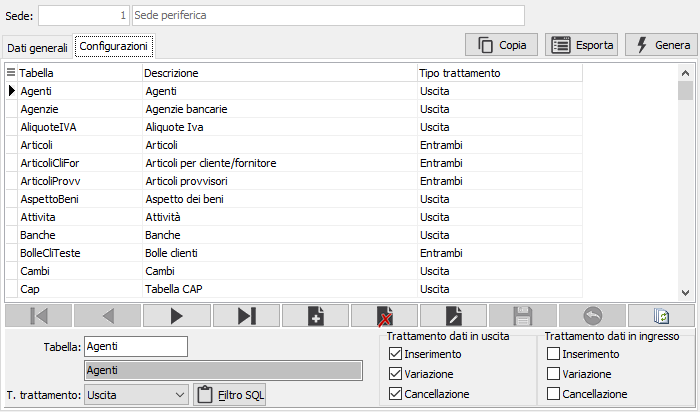

è possibile selezionare un percorso già esistente.
è possibile selezionare un percorso già esistente.Anagrafica sedi
La tabella consente di inserire la configurazione delle sede che saranno oggetto dei trasferimenti; il codice 0 (zero) è riservato alla sede centrale. La manutenzione si divide in due linguette: una relativa ai dati generali della sede e l'altra specifica per la configurazione di quali tabelle trasferire e con quali metodologie effettuare il trasferimento.
Dati generali

CODICE: codice numerico per identificare la sede in esame, il codice 0 (zero) è riservato alla sede centrale. Sul campo sono attive le funzioni di ricerca (F9) sulla tabella stessa.
OBSOLETO: flag attivabile dall’utente per inibire il possibile utilizzo dell’elemento di tabella in esame nelle successive transazioni.
DESCRIZIONE: campo alfanumerico per descrivere la Sede.
AGENTE: codice di un eventuale agente da utilizzare come filtro per la selezione dei dati. Sul campo sono attive le funzioni di ricerca (F9) ed accesso (CTRL+W) sulla tabella agenti. Il campo non è attivo al momento.
PATH DATI: indica il percorso su disco dove saranno prelevati/depositati i dati scambiati con la sede remota in oggetto. Tramite il pulsante Cartella è possibile selezionare un percorso già esistente.
TELEFONO: campo alfanumerico per descrivere un numero telefonico.
MODEM: campo alfanumerico per descrivere un numero telefonico relativo ad un modem.
REFERENTE: campo alfanumerico per descrivere il nome di un referente aziendale.
E-MAIL: campo alfanumerico di per descrivere un indirizzo e-mail.
TIPO TRASFERIMENTO: definisce la tipologia con cui dovrà essere effettuato il trasferimento dei dati: Cartella/floppy, e-mail, modem.
PROT. MAGAZZINO: indica il numero iniziale di protocollo magazzino per quella sede. La generazione esercizio considera il valore, se presente, per avviare la numerazione dei protocolli.
NOTE: campo annotazioni da utilizzare per il trasferimento.
MAGAZZINI: eventuali codici di magazzini da utilizzare come filtro per la selezione dei dati. Sul campo sono attive le funzioni di ricerca (F9) ed accesso (CTRL+W) sulla tabella magazzini.
Configurazioni
La sezione configurazioni contiene le informazioni relative alle tabelle da trasferire ed al metodo di trasferimento, non è necessario compilarla per la sede che è definita in configurazione come 'Sede operativa'.

TABELLA: codice della tabella per cui sono necessari i trasferimenti. Sul campo sono attive le funzioni di ricerca (F9) sulla tabella configurazione tabelle.
T. TRATTAMENTO: definisce il criterio di trattamento relativo alla tabella: nessuno, uscita, ingresso, entrambi.
TASTO FILTRO SQL: consente di inserire filtri aggiuntivi con la sintassi SQL.
TRATTAMENTO USCITA: le caselle di spunta consentono di indicare in quali casi deve essere trattata la tabella in fase di uscita.
TRATTAMENTO INGRESSO: le caselle di spunta consentono di indicare in quali casi deve essere trattata la tabella in fase di ingresso.
Il pulsante Esporta consente di generare un file su disco, contenete la configurazione della sede, da utilizzare nella sede remota per importare la configurazione già compilata. Nella sede periferica il pulsante ha l'etichetta Importa.
Il pulsante Genera consente di generare, sul database, i trigger necessari al trasferimento delle tabelle configurate.